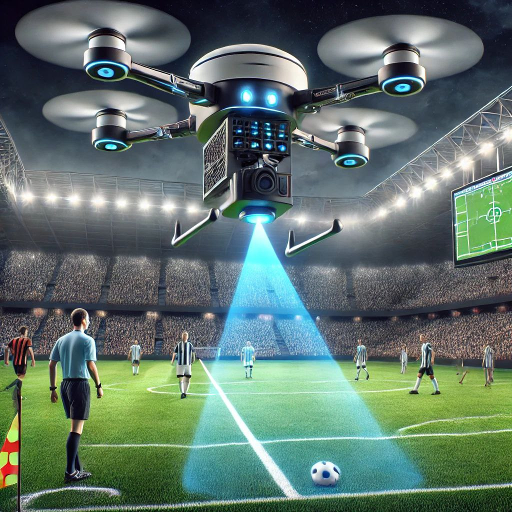

Our cutting-edge AI drone system is designed to bring precision, speed, and fairness to the beautiful game. Utilizing advanced computer vision and real-time processing, our drone autonomously monitors the field from above, tracking player positions and identifying offside situations with unparalleled accuracy.
No more controversial calls or missed flags — our technology assists referees by providing a reliable, unbiased second eye in the sky. Engineered for both professional and amateur leagues, our goal is to enhance the integrity of the game while embracing innovation.
Smart. Fast. Fair. That’s the future of football officiating
